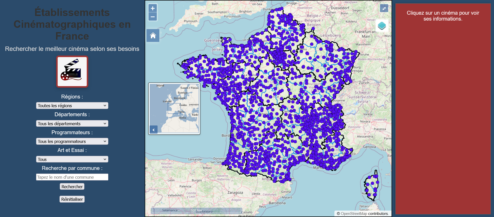
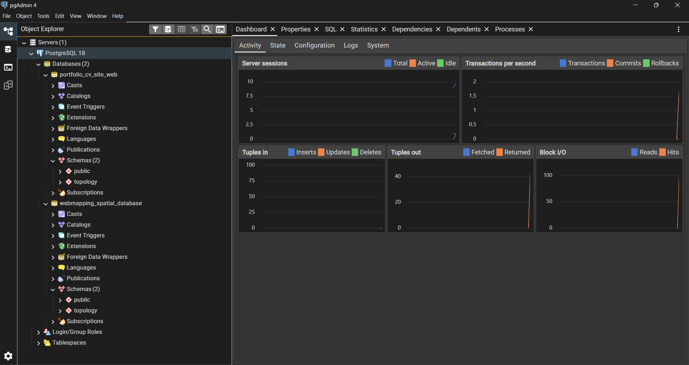

Open Source Geomatician
QGIS • PostGIS • OpenLayers • Python • R
Geomatician passionate about new technologies, cartography, webmapping, programming and open source (FOSS). I explore, analyze and visualize territory with free tools.
QGIS • PostGIS • OpenLayers • Python • R
Geomatician passionate about new technologies, cartography, webmapping, programming and open source (FOSS). I explore, analyze and visualize territory with free tools.

Automation of geospatial processing to accelerate recurring GIS workflows. Intuitive Qt interface.
Web cartography application with PostGIS data served via GeoServer WFS. Spatial search and advanced filters.


Collection of optimized spatial SQL queries for complex territorial analysis and massive data processing.
QGIS • GRASS GIS • GDAL
PostgreSQL/PostGIS • SpatiaLite • Geoserver
OpenLayers • Leaflet • MapLibre
Python • R (sf) • JavaScript • PHP • HTML • CSS • Git (Bash)
Apache Web Server HTTPS • JDK Java Eclipse Temurin (Adoptium) • Mozilla Firefox • VSCodium • RStudio